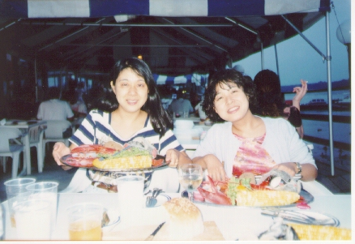

ニューパルツのレストラン (96.8)
妹と

|
先週に引き続いて、妹と撮った写真です。撮影はやっぱり妹のだんなm(_ _)m。今度は地元ニューパルツから２０分くらい行ったところにあるハドソン河沿いのレストランです。 私の住んでいるところはアメリカでは北の方で、夏は快適です。ここでは７月が一番暑く、８月の夕方は夕立が降ることもありひんやりしています。一番暑い７月だって東京とは比べものになりません。クーラーが欲しいと思う時なんて数えるほどしかありませんから。。まわりが自然に囲まれていることもあり朝夕は涼しく、近くにはモホークという高級リゾート地もあります。 さて、妹たちが来たのは去年の８月。都会のニューヨークと田舎のニューヨーク州が見たい、と言うことで、日程の半分は私の町に来ました。私の町は住むには快適なのですが、そんなに見るところはありません。近くには、昔、ニューヨーク州の州都だった（ほとんどの人はニューヨーク州の州都がオールバニーだなんて知りませんよね？ニューヨーク市ではないのですよ。(^-^)）キングストンという町と、ＩＢＭがあるプーキプシー、それから音楽の祭典で割と有名なウッドストックがあります。 今回紹介するレストランは私のお気に入りの場所です。と言っても、入ったことはありませんでした(^^ゞ。普通に比べると高いので、ちょっと行ってみよう、という気にはなりません。ただ風景がきれいなので、ドライブの帰りに近くの桟橋（と呼ぶにはあまりに小さいのですが(^^;）に立ち寄ったことが何度かあり、ニューパルツに来る人がいたら連れてこよう、と思っていたのです。それで妹夫婦を連れて行ってみたのです。 |

=ニューパルツのレストランで、妹・祐子と(96.8)=
|
場所のあるところはほとんど夏場は外のテラスで食事ができます。自然の中で食事なんて、ちょっとおしゃれでしょ？ここは河沿いということで、シーフード料理屋さんになっています。”えび”を注文したのですが、わかるかな、となりのとうもろこしより大きいのですよ。それにポテトもついて、はまぐりみたいのもついて、１６ドル（１７００円くらい）。日本に比べたら安めかな？その前にとてもおいしいパンが来たので、合わせるとお腹がいっぱいになってしまいました。 私は普段はとても質素な生活をしている（せざるを得ない、、(^^;）ので、この妹たちが来た１週間は王様のような食生活でした。とてもおいしいのだけど、やっぱりどれをとっても量が多く、暮らすとなるとちょっと気をつけないと危ない(^^;かもしれません。私を含め、ほとんどの人がここに来て太っていますから。。(^^; ということで、機会があってニューパルツを訪問してくださる方はここに一緒に行きましょうね。「田舎のおしゃれ」が楽しめるかもしれません(^^)v。 |
[ホームへ] [写真一覧へ]